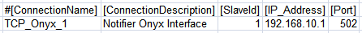
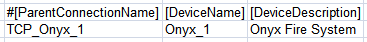
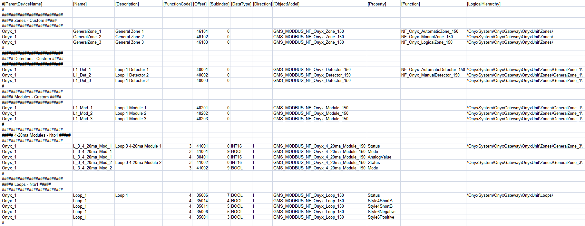

Notifier Onyx Configuration (CSV) File
To integrate a NOTIFIER® Onyx fire panel into Desigo CC you must first prepare a textual configuration file in CSV (comma separated values) format that defines the data structure for the panel.
To do this, use Microsoft Excel or a text editor to edit the configuration file.
NOTE: Use a comma (,) as separator.
You can then use this file to import the configuration.
For reference information about the Modbus configuration CSV file, see CSV File for Modbus Device Import.
To obtain pre-configured CSV sample files to edit, contact the Technical Support team.
Having pre-configured CSV files with offsets already defined for each object reduces the risk of reading wrong addresses from the management station. Also, having examples of function mapping already defined can be useful when adding new points and starting from an example of an existing point type included in the CSV file with functions defined.
Pre-configured sample files can be used to create custom configuration files by adding or removing annunciators, remote displays, loops, detectors, modules, zones, or circuits according to the specific configuration.
Additionally, since the device points are imported into Management View as a flat list, pre-configured sample files also provide a predefined logical view that can be used for the configuration required on the field site.
As for the logical view, pre-configured sample files can be also modified to automatically create a user-defined view out of the import. This part is not provided in pre-configured CSV files because user views strictly depend on the customer’s requirements that can be easily added.
Onyx Configuration File Sections
Section | Description |
[Connections] | Communication channels between Onyx panel and Desigo CC. 1 interface for each device must be defined. |
[Devices] | Onyx fire panel. |
[Points] | Physical points. |
Onyx Connections Data
The [Connections] section comprises the following data:
Data | Description |
[ConnectionName] | Interface name. Special characters are not allowed. |
[ConnectionDescription] | Interface description to display in System Browser. |
[SlaveId] | Onyx Modbus subordinate address. |
[IP_Address] | Interface IP address. |
[Port] | TCP Modbus port. Default value: 502. |
[Alias] | Not used. |
[FunctionName] | Not used. |
[Discipline ID] | Not used. |
[Subdiscipline ID] | Not used. |
[Type ID] | Not used. |
[Subtype ID] | Not used. |

Onyx Devices Data
The [Devices] section comprises the following data:
Data | Description |
[ParentConnectionName] | Name of the interface assigned to this device. |
[DeviceName] | Device name. |
[DeviceDescription] | Device description to display in System Browser. |
[ObjectModel] | Not used. |
[Alias] | Not used. |
[Function Name] | Not used. |
[Discipline ID] | Not used. |
[Subdiscipline ID] | Not used. |
[Type ID] | Not used. |
[Subtype ID] | Not used. |
[LogicalHierarchy] | Not used. |
[UserHierarchy] | Not used. |

Onyx Points Data
The [Points] section comprises the following data:
In this CSV section the integration makes use of both custom and Nto1 import modes:
- Custom import mode requires the use of custom import rules. Object models are mandatory, while there is no need to define DPEs.
- Nto1 import mode requires that each DPE of an object model must be defined.
Data | Description | |||
[ParentDeviceName] | Name of the device to which the point is connected. | |||
[Name] | Point name. Special characters are not allowed. | |||
[Description] | Point description to display in System Browser. For Nto1 objects, the Description field is needed for the first property only. The subsequent properties will be ignored. | |||
[FunctionCode] | For Nto1 objects only (see CSV File for Modbus Device Import). | |||
[Offset] | For Custom objects, used in combination with the import rules table to achieve the correct value of the register. For Nto1 objects (defined for each property in CSV sample files that can be provided by the Technical Support team). The following rules apply to Onyx CSV sample files. | |||
Onyx Gateway | ||||
Offset 0 (zero) is required in the first line. | ||||
Panel Object (Nto1) | ||||
Onyx Printer | ||||
Offset 0 (zero) is required. | ||||
Loops Objects (Nto1) | ||||
Detectors and Modules | ||||
Start Address | End Address | Device/Module Address | ||
0 | 199 | L1D1– L1D159 | ||
200 | 399 | L1M1– L1M159 | ||
400 | 599 | L2D1– L2D159 | ||
600 | 799 | L2M1– L2M159 | ||
800 | 999 | L3D1– L3D159 | ||
1000 | 1199 | L3M1– L3M159 | ||
1200 | 1399 | L4D1– L4D159 | ||
1400 | 1599 | L4M1– L4M159 | ||
1600 | 1799 | L5D1– L5D159 | ||
1800 | 1999 | L5M1– L5M159 | ||
2000 | 2199 | L6D1– L6D159 | ||
2200 | 2399 | L6M1– L6M159 | ||
2400 | 2599 | L7D1– L7D159 | ||
2600 | 2799 | L7M1– L7M159 | ||
2800 | 2999 | L8D1– L8D159 | ||
3000 | 3199 | L8M1– L8M159 | ||
3200 | 3399 | L9D1– L9D159 | ||
3400 | 3599 | L9M1– L9M159 | ||
3600 | 3799 | L10D1– L10D159 | ||
3800 | 3999 | L10M1– L10M159 | ||
Analog Values (available for 4-20ma Modules only) | ||||
Start Address | End Address | Analog Value (16 bits) | ||
0 | 199 | L1M1– L1M159 | ||
200 | 399 | L2M1– L2M159 | ||
400 | 599 | L3M1– L3M159 | ||
600 | 799 | L4M1– L4M159 | ||
800 | 899 | L5M1– L5M159 | ||
1000 | 1199 | L6M1– L6M159 | ||
1200 | 1399 | L7M1– L7M159 | ||
1400 | 1599 | L8M1– L8M159 | ||
1600 | 1799 | L9M1– L9M159 | ||
1800 | 1999 | L10M1– L10M159 | ||
Zones | ||||
Start Address | End Address | Zone Address | ||
6000 | 6999 | General Zones | ||
7000 | 8999 | Logical Zones | ||
9000 | 9099 | Trouble Zones | ||
9100 | 9109 | Releasing Zones | ||
Panel Circuits | ||||
Use consecutive offsets from 1 to 96 (for example, offset 96 for panel circuit 96) | ||||
Bell Circuits | ||||
Use consecutive offsets from 1 to 4 (for example, offset 4 for bell circuit 4) | ||||
Remote Displays Offsets | ||||
Offset | Remote Displays | |||
5024 | 1 to 8 | |||
5025 | 9 to 16 | |||
5026 | 17 to 24 | |||
5027 | 25 to 32 | |||
AnnunciatorsOffsets | ||||
Offset | Annunciators | |||
5000 | 1 | |||
5001 | 2 to 9 | |||
5002 | 10 to 17 | |||
5003 | 18 to 25 | |||
5004 | 26 to 32 | |||
5007 | 33 to 40 | |||
5008 | 41 to 48 | |||
5009 | 49 to 56 | |||
5010 | 57 to 64 | |||
5016 | 65 to 72 | |||
5017 | 73 to 80 | |||
5018 | 81 to 88 | |||
5019 | 89 to 96 | |||
5020 | 97 to 104 | |||
5021 | 105 to 112 | |||
5022 | 113 to 120 | |||
5023 | 212 to 128 | |||
Voice&Phone (Nto1) | ||||
[SubIndex] | ||||
[DataType] | For Nto1 objects only (see CSV File for Modbus Device Import). | |||
[Direction] | For Nto1 objects only (see CSV File for Modbus Device Import). | |||
[Object Model] | Name of the object model linked to this point.
| |||
[Property] | For Nto1 objects only (See CSV File for Modbus Device Import). | |||
[Alias] | Not used. | |||
[Function] | Function name as defined in the Onyx library. Used to automatically associate the function (for example. NF_Onyx_AutomaticZone_150) to the point Instance during the import of the CSV file. This field is optional. Leave it blank if no function should be assigned during the import. | |||
[Discipline ID] | Not used. | |||
[Subdiscipline ID] | Not used. | |||
[Type ID] | Not used. | |||
[Subtype ID] | Not used. | |||
[Min] | Not used. | |||
[Max] | Not used. | |||
[MinRaw] | Not used. | |||
[MaxRaw] | Not used. | |||
[MinEng] | Not used. | |||
[MaxEng] | Not used. | |||
[Resolution] | Not used. | |||
[Eng Unit] | Not used. | |||
[StateText] | Not used. | |||
[AlarmClass] | Not used. | |||
[AlarmType] | Not used. | |||
[AlarmValue] | Not used. | |||
[EventText] | Not used. | |||
[NormalText] | Not used. | |||
[UpperHysteresis] | Not used. | |||
[LowerHysteresis] | Not used. | |||
[LogicalHierarchy] | Used to create a hierarchy in the Logical View. For Nto1 objects, the [LogicalHierarchy] field is needed for the first property only. The subsequent properties will be ignored. | |||
[UserHierarchy] | Used to create a hierarchy in the User-Defined View. For Nto1 objects, the [UserHierarchy] field is needed for the first property only. The subsequent properties will be ignored. | |||
